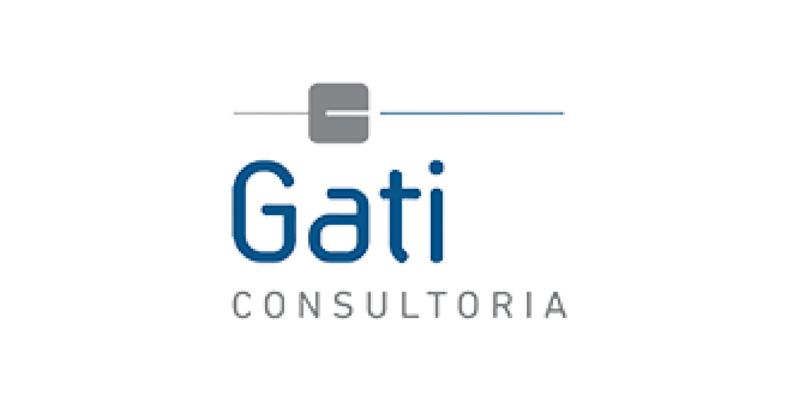

Arquitetura
Separação da One Page em páginas com objetivos mais claros e uma navegação mais organizada.
Case study · UX e Front-End
Um projeto de site para a Gati Consultoria que mostrou como alinhamento, comunicação e implementação caminham juntos.
Inicialmente, fui convidado para criar o layout e desenvolver o site. A proposta era evoluir a presença digital existente, mudando completamente o visual e tornando a experiência mais clara.
O site anterior era uma One Page. Ao entender o fluxo, percebi que separar o conteúdo em páginas distintas ajudaria a organizar a navegação e também a criar uma base melhor para SEO.
Antes do desenvolvimento, analisei referências de consultorias e defini um guia visual com cores, tipografia e grid. A ideia era evitar imagens genéricas e construir uma comunicação mais própria para a marca.
Separação da One Page em páginas com objetivos mais claros e uma navegação mais organizada.
Pesquisa de referências para encontrar uma linguagem menos genérica e mais alinhada ao negócio.
Definição de cores, tipografia e grid para orientar a implementação e futuras manutenções.
Desenvolvimento responsivo, estruturação das páginas e configuração da plataforma.

Durante o projeto, o layout acabou sendo alterado por outra pessoa e recebi um arquivo em PSD com apenas a página inicial. Foi preciso transformar uma referência incompleta em um site funcional, criando as páginas restantes durante o desenvolvimento.
O principal aprendizado foi entender que wireframes, alinhamentos e checkpoints de aprovação precisam fazer parte do projeto desde o começo. Uma boa execução técnica não substitui expectativas compartilhadas.
“Um wireframe simples pode evitar uma grande frustração depois.”